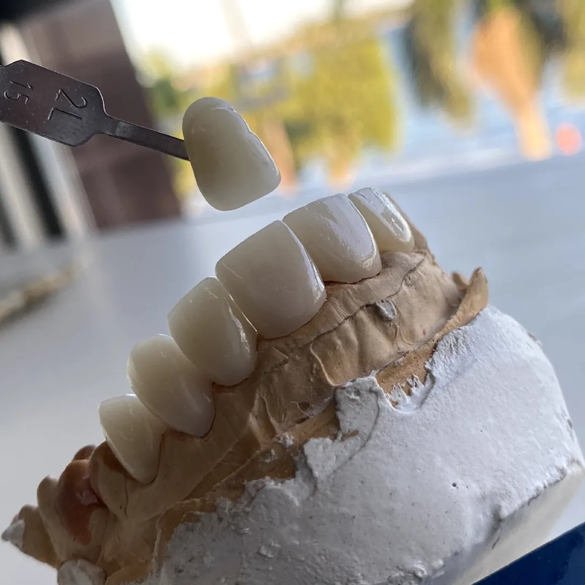

Precisão em cada etapa
Do modelo à prótese finalizada, cada caso passa por conferência cuidadosa antes de seguir para a sua clínica.
A Tecceramica é o laboratório parceiro de dentistas e clínicas que não abrem mão de previsibilidade: da moldagem à peça finalizada, cuidamos de cada etapa para o seu tratamento sair como planejado.

Restauração em dissilicato de lítio — trabalho real TecceramicaOs pontos que mais pesam na hora de escolher para quem enviar o seu próximo caso.
Do modelo à prótese finalizada, cada caso passa por conferência cuidadosa antes de seguir para a sua clínica.
Protocolos e próteses sobre implante desenvolvidos em sintonia com o planejamento do seu caso clínico.
Fluxos digitais e CAD/CAM entram em cena quando o caso pede mais previsibilidade e ajuste refinado.
Cor, textura e forma trabalhadas para reduzir ajustes em cadeira e devolver naturalidade ao sorriso do paciente.
Comunicação direta sobre o andamento do seu caso, do envio até a entrega — sem deixar você no escuro.
Prazos combinados com a rotina da sua clínica, para você planejar a agenda do paciente com segurança.
Cada imagem abaixo saiu do laboratório Tecceramica e foi entregue pronta para instalação. Use como referência do padrão de acabamento que a sua clínica pode esperar.
Estrutura preparada para receber a lista completa e oficial de serviços da Tecceramica.
Trabalhos em E-max, dissilicato de lítio e cerômero, com foco em cor, translucidez e adaptação.
Falar sobre este serviçoReabilitações fixas sobre implante, produzidas em sintonia com o planejamento clínico do seu caso.
Falar sobre este serviçoProvisórios digitais para transição do caso, mantendo estética e função durante o tratamento.
Falar sobre este serviçoPróteses totais com acabamento e ajuste pensados para o conforto e a estética do paciente.
Falar sobre este serviçoAlternativa estética e resistente para reabilitações unitárias e múltiplas.
Falar sobre este serviçoConte para a gente o que a sua clínica precisa — podemos ter a solução certa para o seu caso.
Fale com a genteUm fluxo simples para reduzir dúvidas e facilitar o primeiro contato.
Fale com a Tecceramica pelo WhatsApp e conte o que a sua clínica precisa.
Envie moldagem, escaneamento ou modelo conforme a orientação combinada com o laboratório.
Seu caso é produzido com acompanhamento e conferência em cada etapa.
Ajustes finais de cor, forma e adaptação antes do envio para a sua clínica.
Você recebe a prótese pronta para instalação, dentro do prazo combinado.
Depoimentos de exemplo — em breve, substituídos pelos relatos reais de dentistas e clínicas parceiras.
"O acabamento das peças chega muito próximo do que a gente planeja em consultório. Isso reduz bastante os ajustes na hora da instalação."
"Gosto de trabalhar com um laboratório que me atualiza sobre o andamento do caso. Facilita muito a comunicação com o paciente também."
"Os prazos combinados são cumpridos, o que ajuda demais no planejamento da agenda da clínica."
Fale agora com a Tecceramica e leve seu caso para um laboratório que acompanha de perto cada etapa.
Preencha o formulário ou fale direto pelo WhatsApp — o que for mais rápido para você.
{kind=link}
{kind=link}
{kind=link}
{kind=link}
{kind=link}
{kind=link}
{kind=link}
{kind=link}